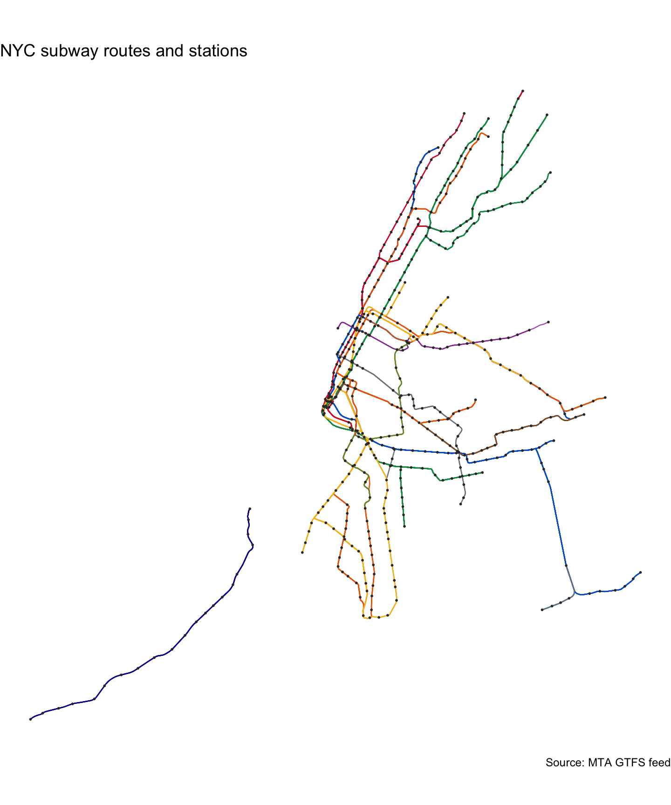

Spatial and tabular data describing the New York City subway system, derived from the MTA’s GTFS feed. Includes route shapes, stops, parent stations, directional platforms, transfers, and pre-computed offset versions of routes and stops suitable for schematic mapping.
Installation
You can install the development version of nycroutes from GitHub with:
# install.packages("remotes")
remotes::install_github("kjhealy/nycroutes")What’s included
nyc_subway_routes_df
#> # A tibble: 29 × 10
#> route_id agency_id route_short_name route_long_name route_desc route_type
#> <chr> <chr> <chr> <chr> <chr> <int>
#> 1 A MTA NYCT A 8 Avenue Express Trains op… 1
#> 2 C MTA NYCT C 8 Avenue Local Trains op… 1
#> 3 E MTA NYCT E 8 Avenue Local Trains op… 1
#> 4 B MTA NYCT B 6 Avenue Express Trains op… 1
#> 5 D MTA NYCT D 6 Avenue Express Trains op… 1
#> 6 F MTA NYCT F Queens Blvd Expres… Trains op… 1
#> 7 FX MTA NYCT FX Brooklyn F Express Trains op… 1
#> 8 M MTA NYCT M Queens Blvd Local/… Trains op… 1
#> 9 G MTA NYCT G Brooklyn-Queens Cr… Trains op… 1
#> 10 J MTA NYCT J Nassau St Local Trains op… 1
#> # ℹ 19 more rows
#> # ℹ 4 more variables: route_url <chr>, route_color <chr>,
#> # route_text_color <chr>, route_sort_order <int>
nyc_subway_routes_sf
#> Simple feature collection with 311 features and 5 fields
#> Geometry type: LINESTRING
#> Dimension: XY
#> Bounding box: xmin: 914189.9 ymin: 126191.2 xmax: 1052169 ymax: 268346.1
#> Projected CRS: NAD83 / New York Long Island (ftUS)
#> First 10 features:
#> shape_id route_id route_short_name route_long_name route_color
#> 1 1..N03R 1 1 Broadway - 7 Avenue Local #D82233
#> 2 1..N03X001 <NA> <NA> <NA> <NA>
#> 3 1..N04R <NA> <NA> <NA> <NA>
#> 4 1..N05R <NA> <NA> <NA> <NA>
#> 5 1..N06R <NA> <NA> <NA> <NA>
#> 6 1..N12R <NA> <NA> <NA> <NA>
#> 7 1..N13R <NA> <NA> <NA> <NA>
#> 8 1..S03R 1 1 Broadway - 7 Avenue Local #D82233
#> 9 1..S03X001 <NA> <NA> <NA> <NA>
#> 10 1..S04R 1 1 Broadway - 7 Avenue Local #D82233
#> geometry
#> 1 LINESTRING (980461.4 195059...
#> 2 LINESTRING (980461.4 195059...
#> 3 LINESTRING (980461.4 195059...
#> 4 LINESTRING (980461.4 195059...
#> 5 LINESTRING (980461.4 195059...
#> 6 LINESTRING (980461.4 195059...
#> 7 LINESTRING (980461.4 195059...
#> 8 LINESTRING (1012291 263271....
#> 9 LINESTRING (997071.2 238760...
#> 10 LINESTRING (1011661 261601....
nyc_subway_stops_sf
#> Simple feature collection with 1488 features and 4 fields
#> Geometry type: POINT
#> Dimension: XY
#> Bounding box: xmin: 914189.9 ymin: 126191.2 xmax: 1052169 ymax: 268346.1
#> Projected CRS: NAD83 / New York Long Island (ftUS)
#> # A tibble: 1,488 × 5
#> stop_id stop_name location_type parent_station geometry
#> * <chr> <chr> <int> <chr> <POINT [US_survey_foot]>
#> 1 101 Van Cortlandt… 1 <NA> (1012291 263271.2)
#> 2 101N Van Cortlandt… NA 101 (1012291 263271.2)
#> 3 101S Van Cortlandt… NA 101 (1012291 263271.2)
#> 4 103 238 St 1 <NA> (1011661 261601.4)
#> 5 103N 238 St NA 103 (1011661 261601.4)
#> 6 103S 238 St NA 103 (1011661 261601.4)
#> 7 104 231 St 1 <NA> (1010567 259483)
#> 8 104N 231 St NA 104 (1010567 259483)
#> 9 104S 231 St NA 104 (1010567 259483)
#> 10 106 Marble Hill-2… 1 <NA> (1009187 257916.7)
#> # ℹ 1,478 more rows
nyc_subway_stops_parent_sf
#> Simple feature collection with 496 features and 4 fields
#> Geometry type: POINT
#> Dimension: XY
#> Bounding box: xmin: 914189.9 ymin: 126191.2 xmax: 1052169 ymax: 268346.1
#> Projected CRS: NAD83 / New York Long Island (ftUS)
#> # A tibble: 496 × 5
#> stop_id stop_name location_type parent_station geometry
#> * <chr> <chr> <int> <chr> <POINT [US_survey_foot]>
#> 1 101 Van Cortlandt… 1 <NA> (1012291 263271.2)
#> 2 103 238 St 1 <NA> (1011661 261601.4)
#> 3 104 231 St 1 <NA> (1010567 259483)
#> 4 106 Marble Hill-2… 1 <NA> (1009187 257916.7)
#> 5 107 215 St 1 <NA> (1007682 256050.9)
#> 6 108 207 St 1 <NA> (1006704 254292.8)
#> 7 109 Dyckman St 1 <NA> (1004848 252801)
#> 8 110 191 St 1 <NA> (1003777 250866.9)
#> 9 111 181 St 1 <NA> (1002621 248782)
#> 10 112 168 St-Washin… 1 <NA> (1000815 245520.2)
#> # ℹ 486 more rows
nyc_subway_stops_platform_sf
#> Simple feature collection with 992 features and 4 fields
#> Geometry type: POINT
#> Dimension: XY
#> Bounding box: xmin: 914189.9 ymin: 126191.2 xmax: 1052169 ymax: 268346.1
#> Projected CRS: NAD83 / New York Long Island (ftUS)
#> # A tibble: 992 × 5
#> stop_id stop_name location_type parent_station geometry
#> * <chr> <chr> <int> <chr> <POINT [US_survey_foot]>
#> 1 101N Van Cortlandt… NA 101 (1012291 263271.2)
#> 2 101S Van Cortlandt… NA 101 (1012291 263271.2)
#> 3 103N 238 St NA 103 (1011661 261601.4)
#> 4 103S 238 St NA 103 (1011661 261601.4)
#> 5 104N 231 St NA 104 (1010567 259483)
#> 6 104S 231 St NA 104 (1010567 259483)
#> 7 106N Marble Hill-2… NA 106 (1009187 257916.7)
#> 8 106S Marble Hill-2… NA 106 (1009187 257916.7)
#> 9 107N 215 St NA 107 (1007682 256050.9)
#> 10 107S 215 St NA 107 (1007682 256050.9)
#> # ℹ 982 more rows
nyc_subway_transfers_df
#> # A tibble: 613 × 4
#> from_stop_id to_stop_id transfer_type min_transfer_time
#> <chr> <chr> <int> <int>
#> 1 101 101 2 180
#> 2 103 103 2 180
#> 3 104 104 2 180
#> 4 106 106 2 180
#> 5 107 107 2 180
#> 6 108 108 2 180
#> 7 109 109 2 180
#> 8 110 110 2 180
#> 9 111 111 2 180
#> 10 112 112 2 180
#> # ℹ 603 more rows
nyc_subway_routes_offset_sf
#> Simple feature collection with 311 features and 6 fields
#> Geometry type: LINESTRING
#> Dimension: XY
#> Bounding box: xmin: 914739.9 ymin: 126191.2 xmax: 1052869 ymax: 268346.1
#> Projected CRS: NAD83 / New York Long Island (ftUS)
#> # A tibble: 311 × 7
#> shape_id route_id route_short_name route_long_name route_color
#> <chr> <chr> <chr> <chr> <chr>
#> 1 1..N03R 1 1 Broadway - 7 Avenue Local #D82233
#> 2 1..N03X001 <NA> <NA> <NA> <NA>
#> 3 1..N04R <NA> <NA> <NA> <NA>
#> 4 1..N05R <NA> <NA> <NA> <NA>
#> 5 1..N06R <NA> <NA> <NA> <NA>
#> 6 1..N12R <NA> <NA> <NA> <NA>
#> 7 1..N13R <NA> <NA> <NA> <NA>
#> 8 1..S03R 1 1 Broadway - 7 Avenue Local #D82233
#> 9 1..S03X001 <NA> <NA> <NA> <NA>
#> 10 1..S04R 1 1 Broadway - 7 Avenue Local #D82233
#> # ℹ 301 more rows
#> # ℹ 2 more variables: geometry <LINESTRING [US_survey_foot]>, x_offset <dbl>
nyc_subway_stops_offset_sf
#> Simple feature collection with 1909 features and 7 fields
#> Geometry type: POINT
#> Dimension: XY
#> Bounding box: xmin: 914739.9 ymin: 126191.2 xmax: 1051919 ymax: 268346.1
#> Projected CRS: NAD83 / New York Long Island (ftUS)
#> # A tibble: 1,909 × 8
#> stop_id stop_name location_type parent_station geometry
#> <chr> <chr> <int> <chr> <POINT [US_survey_foot]>
#> 1 101N Van Cortlandt… NA 101 (1011641 263271.2)
#> 2 101S Van Cortlandt… NA 101 (1011641 263271.2)
#> 3 103N 238 St NA 103 (1011011 261601.4)
#> 4 103S 238 St NA 103 (1011011 261601.4)
#> 5 104N 231 St NA 104 (1009917 259483)
#> 6 104S 231 St NA 104 (1009917 259483)
#> 7 106N Marble Hill-2… NA 106 (1008537 257916.7)
#> 8 106S Marble Hill-2… NA 106 (1008537 257916.7)
#> 9 107N 215 St NA 107 (1007032 256050.9)
#> 10 107S 215 St NA 107 (1007032 256050.9)
#> # ℹ 1,899 more rows
#> # ℹ 3 more variables: route_id <chr>, x_offset <dbl>, route_color <chr>Example
A quick map of the subway system, coloring each route by its MTA brand color and marking parent stations:
ggplot() +
geom_sf(
data = nyc_subway_routes_sf,
mapping = aes(color = route_color),
linewidth = 0.4,
alpha = 0.8
) +
geom_sf(
data = nyc_subway_stops_parent_sf,
size = 0.3,
color = "grey20"
) +
scale_color_identity() +
labs(
title = "NYC subway routes and stations",
caption = "Source: MTA GTFS feed"
) +
theme_void()
#> Warning: Removed 110 rows containing missing values or values outside the scale range
#> (`geom_sf()`).